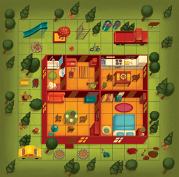
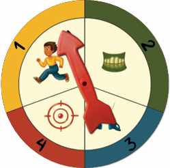

Профиль
ПрофильЦель игры, поле и победа
Ваша задача – спастись из дома, полного зомби. Для этого нужно найти в доме или рядом с ним ключ от красной машины с другой стороны здания и канистру с бензином, чтобы заправить её и уехать. Найти оба предмета могут один или разные игроки; можно уехать одному или подождать команду. Если на красной машине лежит закрытая карточка, при посадке её нужно открыть и при необходимости победить монстра.
В коробке: поле на 144 клетки; 28 карточек монстров (17 зомби, 5 дьявольских псов, 5 пауков-мутантов, босс Болотный ужас); 11 карточек оружия (4 гранаты, нож, арбалет, топор, пистолет, автомат, дробовик, гранатомёт); 16 карточек вещей (6 аптечек, 8 досок, канистра, ключ); 5 карточек игроков (Саша, Настя, Надя, Макс, Боря); 40 фишек-сердечек; вертушка и правила.

Подготовка к партии
1. Персонажи: в закрытую вытяните по одной карте персонажа или договоритесь, кто кем играет.
2. Жизни: раздайте фишки-сердечки - по 3 каждому, а игроку за Борю - 5. Убирайте их при укусах монстров и добавляйте аптечками (начальный запас жизней можно увеличивать без ограничений). Если сердечки закончились – персонаж погибает. По договорённости стартовые жизни можно менять для сложности.
3. Игровое поле: поставьте карточки всех игроков на «Старт» - поломанную жёлтую машину в нижнем левом углу. Остальные карточки (монстры, оружие, вещи и фишки невыбранных персонажей) перемешайте и выложите рубашкой вверх по одной на клетку в интересных местах дома и двора (шкаф, кровать, ванна, занавески, песочница, помойный бак и др.).
Перемещение и ход игрока
Игроки ходят по часовой стрелке, начиная с самого смелого. В свой ход крутите вертушку и двигайте карточку на выпавшее число клеток по прямой в любую сторону (по диагонали нельзя).
Сквозь стены ходить нельзя - входите через двери или окна. На закрытой карточке нужно остановиться и открыть её либо обойти (можно остановиться раньше выпавшего числа и закончить ход). Через фишки других игроков проходить можно, но вставать на одну клетку с ними нельзя (исключение - финиш на машине). На соседних клетках в конце хода можно без траты хода меняться и делиться вещами. Проходить сквозь открытых монстров нельзя – нужно остановиться и драться.
Открыв закрытую карточку: вещь забираете себе, монстра – атакуете.

Бой и гибель персонажа
При открытии карточки монстр сразу нападает. Крутите вертушку:
- Перекрещенные шпаги: убиваете монстра, если есть холодное оружие (нож, топор, арбалет).
- Прицел: убиваете одного монстра, если есть огнестрельное оружие (пистолет, автомат, дробовик).
- Зубы: вас укусили - теряете 1 жизнь.
- Бегущий человечек: побег удался. Карточка монстра остаётся открытой на поле, вы снова крутите вертушку и отбегаете на выпавшее число клеток (если попали на закрытую карточку – открываете её).
Если выпали шпаги или прицел, а нужного оружия нет – крутите вертушку дальше, пока не победите, не сбежите или не погибнете. Граната сразу уничтожает любого монстра, кроме босса Болотного ужаса (и уходит в сброс). Гранатомёт - единственный способ убить Болотного ужаса.
У всех монстров по 1 жизни. Победив монстра или погибнув сами, вы убираете соответствующую карту/фишку в сброс. Все вещи и оружие погибшего остаются лежать на его клетке - их может подобрать другой игрок (если клетку не охраняет оставшийся там монстр).
Игра за монстров и доски
Если вас съели: первый погибший игрок начинает управлять открытыми монстрами против остальных (при следующих смертях монстрами рулят несколько выбывших, но нельзя управлять одним и тем же монстром несколько раз подряд, а если монстр один – им управляет только один игрок).
Ход монстров: крутите вертушку и двигайте одного открытого монстра по прямой в любую сторону (не по диагонали; закрытые карточки не открывают, но проходят/останавливаются на них; заканчивать ход на другом монстре нельзя, проходить сквозь него можно): зомби - на число на вертушке − 1, Болотный ужас и пауки-мутанты - на число на вертушке, дьявольские псы - на число на вертушке + 1. Чтобы напасть, нужно догнать игрока и накрыть его карточку карточкой монстра (если шагов больше - остановиться на клетке игрока и начать обычный бой).
Доски на дверях и окнах: пройдя через дверь или окно, игрок может положить туда найденную карточку досок и заблокировать проход. Монстр, стоя на клетке с досками, в свой ход крутит вертушку: при выпадении зубов доски ломаются и идут в сброс (при другом результате попытку можно повторить на следующий ход). Игроки тоже не проходят сквозь забитые проходы - их можно проломить, встав рядом и выстрелив, ударив холодным оружием по вертушке или взорвав гранатой.
Частые вопросы (FAQ)
- Вещи погибшего: ключ, канистра, гранатомёт и остальное остаются на клетке гибели – любой игрок может их подобрать, а монстры могут встать на эту клетку и охранять лут.
- Два игрока на одной клетке: стоять вместе нельзя нигде, кроме клеток красной машины в финале игры.
- Спасение друзей: если игроков меньше 5, фишки оставшихся персонажей замешиваются в закрытую вместе с остальными карточками. Нашли фишку - «спасли» друга (он у вас в рюкзаке). После вашей гибели вы можете сменить фишку на спасённого персонажа и продолжить ход со всеми вещами (у спасённых по 1 жизни, у Бори3, суперсвойства сохраняются).